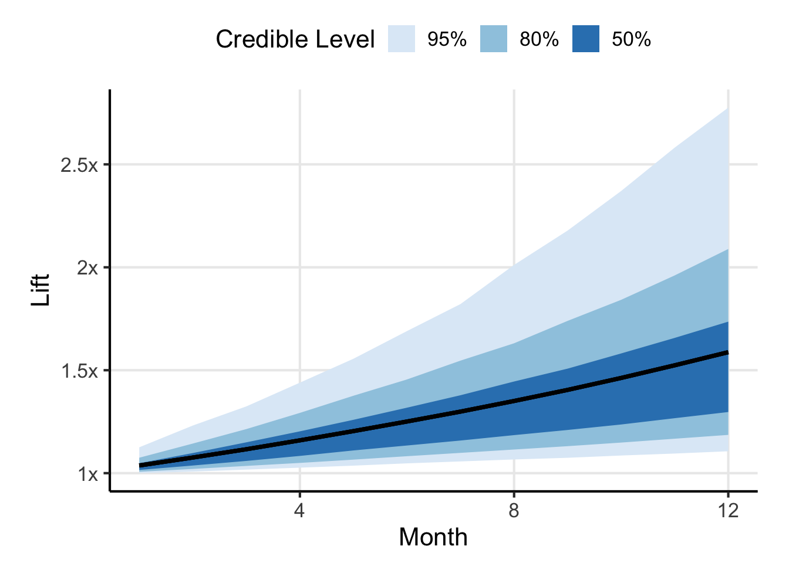
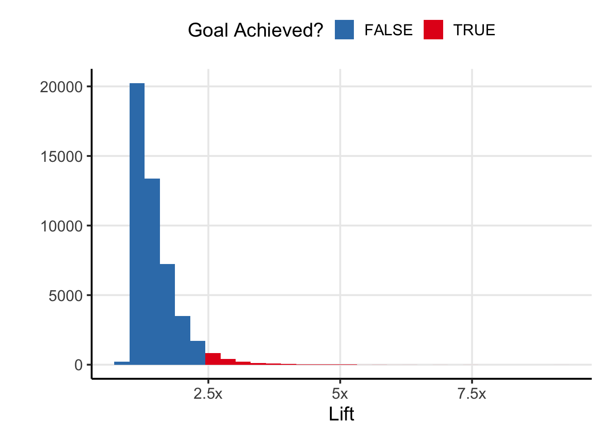
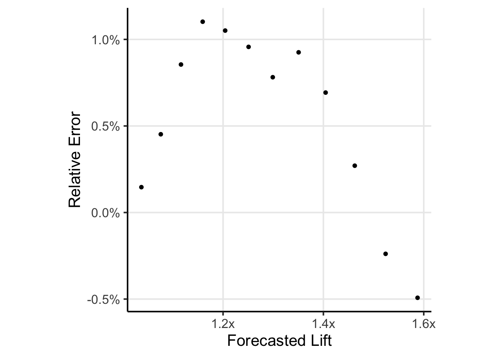

| N | Treatment Conversions | Control Conversions | Relative Lift | p |
|---|---|---|---|---|
| 50,000 | 541 | 496 | 1.09 | 0.08 |
| 50,000 | 557 | 524 | 1.06 | 0.16 |
| 50,000 | 559 | 486 | 1.15 | 0.01 |
| 50,000 | 556 | 500 | 1.11 | 0.04 |
| 50,000 | 530 | 516 | 1.03 | 0.34 |
| 50,000 | 532 | 475 | 1.12 | 0.04 |
| 50,000 | 516 | 507 | 1.02 | 0.40 |
| 50,000 | 532 | 475 | 1.12 | 0.04 |
| 50,000 | 528 | 490 | 1.08 | 0.12 |
| 50,000 | 544 | 506 | 1.08 | 0.13 |
| 50,000 | 519 | 512 | 1.01 | 0.43 |
| 50,000 | 552 | 489 | 1.13 | 0.03 |
You’re part of a team at a company who is tasked with improving conversion on some web page. You’ve run a few experiments already with mixed results and now it is time to set some goals for the next year. Here is a question:
Based on your team’s performance to date, how do you set realistic goals for incremental conversion?
Maybe your approach for your end of year targets would look like
\[ \Big( \mbox{Average Lift}\Big)^{\mbox{Number of Planned Experiments}} \]
Its a good back-of-the-napkin approach to the problem. But if you come up short is that neccesarily a failure? Or, could it be well within expectation?
This post is forecasting how much a given team can move a metric within some time frame. You’re going to forecast the lift the team can generate given some of their past performance. The forecasting is Bayesian, but assumes the team works within a frequentist framework.
Assumptions
Your team can run approximately 1 experiment per month or 12 in a calendar year (but the method we develop can be extended to an arbitrary number of experiments per month). Let’s say you start experimenting on January 1 and will evaluate your performance December 31. In addition to this, assume:
- All your experiments are A/B tests with two and only two groups: test and control.
- Your main metric is a conversion rate and the baseline value is 1%.
- Every intervention has an effect, though it may be small. The null is never true.
- Your site sees 100,000 unique users per month. You split all 100,000 into two groups at random, and
- You measure lift in a relative sense (this is sometimes called relative risk in epidemiology).
Let’s make some additional assumptions about experiments:
- Your team is relatively reliable. They don’t get better at thinking up interventions over time, so the effects they generate do not change over time, except for random variation.
- Experiments effects are independent of one another, so the implementation of one change does not alter the effect of the next experiment.
Scenario
Shown in the table below are your results over the last year. Nice job, lots of wins, a few failures to reject the null, but overall very good. Using the estimated relative lifts where you did , you managed to increase conversion by 80%. Now, you’re PM is asking you to shoot for 2x conversion this year.
Is that reasonable1? How probable are you to generate at least 2x lift over 12 months given your past performance? I mean, it’s only a little better than you did this past year, right? Luckily, you’re a good data scientist. Even though your team uses frequentism to evaluate their A/B tests, you are not beholden to one ideology over another. So, you decide to use a hierarchical Bayesian model to estimate what kinds of lifts your team is likely to generate in the future.
Hierarchical Model
Let \(\widehat{RR}_i\) be the estimated relative lift2 from experiment \(i\). The sampling distribution of relative lift is asymptotically normally distributed on the log scale. Assuming we know the standard error exactly (using the delta rule), this means
\[ \log \Big(\widehat{RR}_i \Big) \sim \mathcal{N}(\log(\theta_i), \sigma)\]
Here, \(\log(\theta_i)\) is the relative lift on the log scale for experiment \(i\) (whereas \(\widehat{RR}_i\) is just the estimated relative lift). We can model the \(\theta\) hierarchically as
\[ \log(\theta_i) \sim \mathcal{N}(\mu, \tau) \]
Now, you just need to place priors on \(\mu\) and \(\tau\) (assume you used good priors).
Forcasting Lift
Once you fit your model, you can generate hypothetical relative lifts by sampling from the model. Let \(\psi\) be a relative lift, so that
\[ \log(\psi) \sim \mathcal{N}(\mu, \sigma) \>. \]
If your team were to implement an experiment for which had a relative lift of \(\psi\), you would get an estimated relative lift. Depending on the size of that estimate, you may or may not reject the null hypothesis. The probability you reject the null hypothesis is when it is false (and it is always false by assumption) is known as the statistical power. Since you have a fixed sample size in each experiment, and every experiment is a 50/50 split, you can calculate the statistical power that you detect a relative lift of \(\psi\). Call that \(p_{\psi}\).
Now for the fun part. Say you run \(n\) experiments per month for \(K\) months. The lift you generate in month \(k\), \(LG_k\), would be
\[ LG_k = \exp\Bigg( \sum_{j=1}^n \log(\psi_j) p_{\psi, j} \Bigg) \]
and the forecasted lift, \(FL\), up to and including month \(k\) is
\[ FL_k = \prod_{i=1}^{k} LG_i \]
Think this through. If you were to implement every intervention, your lift would simply be \(\prod_{j=1}^k \psi_j\), or on the log scale \(\sum_j \log(\psi_j)\). But you don’t detect every effect. The probability you detect the effect of the \(j^{th}\) intervention is \(p_{\psi, j}\). So \(\sum_j \log(\psi_j) p_{\psi, j}\) is the expected lift you would accrue over the \(k\) experiments. Take the exponential to convert this sum back to a product and you’ve got a generated lift after \(n\) experiments in a given month. Multiply the lift month over month to get a forecasted lift. Now, because there is uncertainty in the \(\psi\), there is uncertainty in the forecasted lift. However, your hierarchical model will make it more or less easy to integrate over that uncertainty. Just sample from the model and average over the samples.
Modelling
Luckily, all of the computation above – even the power calculation – can be done inside Stan (and you’re pretty good at writing Stan code3).
Shown in Figure 1 is the forecasted lift as compared to baseline after the \(k^{th}\) month Good job, if you keep doing things as you’re doing, you’re going to probably increase conversion rate by a little more than 50% (a little less than the 80% but still nothing to sneeze at). The shaded blue regions indicate the uncertainty in that estimate. Note that although your forecasted lift seems to always be increasing, that isn’t necessarily the case. You could implement a change which hurts our conversion because of chance, so if you were to plot simulated trajectories you might see some decreases in the metric.

Click to see individual trajectories

Now, what about that goal of increasing conversion by 2x? Well, it isn’t looking good. Looks like there is only a 12% chance you meet or exceed the 2x goal. Could it be your performance last year was just extreme? The distribution of forecasted lifts is long tailed. Maybe you’re just going to regress to the mean. Sounds like a good time to push back on your boss and come prepared with data.

Conclusion
You’re clever and realized you could use a hierarchical model to simulate future experiment results and use those to forecast your team’s performance. Your boss’ goal of a 2x increase is nice in so far as it shows they have confidence in you and your team, but the model says it isn’t super achievable.
If 2x isn’t achievable, what is a better target? Or maybe, what is a better range of targets. I’m not sure, that isn’t the point of the post. The post was to equip you with a means of answering that question yourself, and I know you’re capable of answering it. I mean…look at all this cool modelling you did.
Post Script
Ok, breaking away from the narrative for a moment…this is a continuous approximation to a discrete process. We should simulate this to see how real experiments would stack up against my forecast. I’ve gone ahead and actually simulated running the 12 tests and computed the lift after the 12 tests. Shown below is the forecasted lift versus relative error as compared to simulation. I’ll let you come to your own conclusion about the quality of the approximation.

Footnotes
Just go with it, its a work of fiction, who knows if it is reasonable. Let’s pull out the forecasted lifts after the final experiment.↩︎
\(RR\) for relative risk, sorry my epidemiology is showing↩︎
Speaking of Stan code, the Stan file in the github repo for this post (see the “Edit this page on github” on the right hand side).↩︎